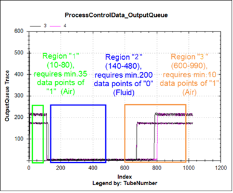
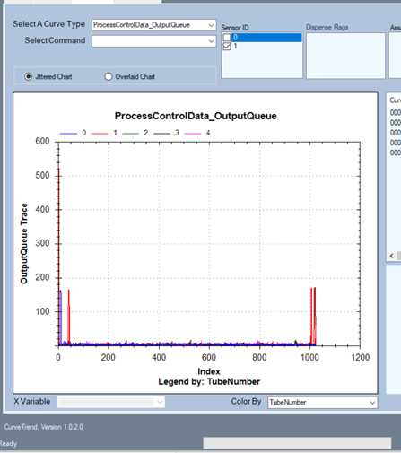
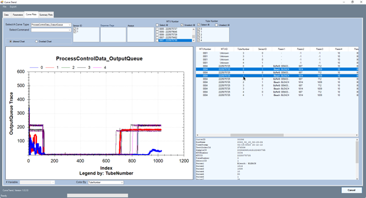
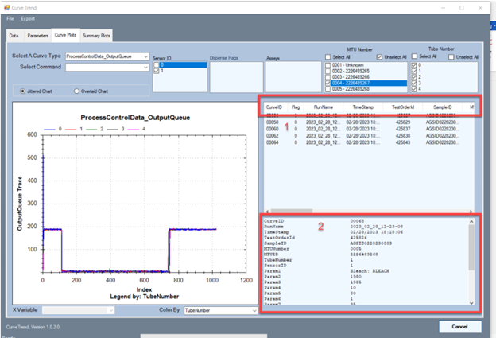
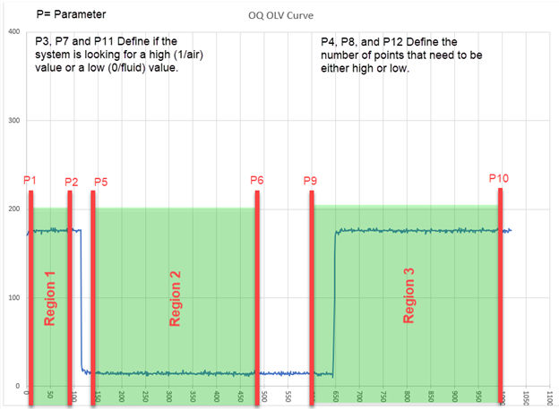
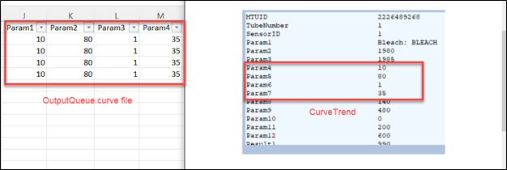

Output Queue – Good Curves vs. Bad Curves
|
Channel |
Description |
|---|---|
| 0 |
Deactivation Buffer |
| 1 |
Bleach |
Examples of good curves and bad curves for the Output Queue appear below.
Output Queue: Process Control Region Definitions
The OLV system incorporates a liquid/air sensor near the injector orifice. The sensor signal for a “good” dispense will start with air (a high signal), then transition to liquid (a low signal) as fluid is dispensed, then remain sensing liquid as the pullback begins, and finally transition to air as the air/liquid interface is drawn up past the sensor.
The Output Queue Process Control algorithm splits this “air-liquid-air” signal into three distinct regions:
- Region 1: Start (air)
- Region 2: Middle (fluid)
- Region 3: End (air)
Refer to end of topic for information about how these regions are defined.

Normal Buffer and Bleach Dispense Curves


Buffer and Bleach Dispense Curves with Bubbles

OLV curves indicate bubbles in the line that may lead to undeactivated waste errors.
See also Error Code 262.000.00054 for undeactivated waste.
Buffer and Bleach Dispense Curves: Fully Air


Output Queue: Bleach, Fully Fluid
OLV curves indicate the OLV sensor is always detecting fluid. This can have a few causes:
- Fluid/ Debris blocking the sight holes in the OLV Housing.
- Fluid/ Debris on the OLV Board
- OLV Cable

Example of Output Queue losing prime:
Between PRIME and 1st MTUs through during sample processing, there appears to be loss of prime on the Bleach line affecting the front end of the trace {Region 1 or A} through the first 2 tubes/dispenses though MTU4.
It resolves by MTU5. Need to investigate the fluidic path for bleach to look for areas that could be contributing to loss of Prime on that line.

Output Queue: Process Control, More Information
The OLV system incorporates a liquid/air sensor near the injector orifice. Each dispense is followed by an airgap pullback. This pulls air back up past the sensor after each dispense. Therefore, the subsequent dispense starts with air in the tubing in front of the sensor. The sensor signal for a “good” dispense will start with air (a high signal), then transition to liquid (a low signal) as fluid is dispensed, then remain sensing liquid as the pullback begins, and finally transition to air as the air/liquid interface is drawn up past the sensor.
The Output Queue Process Control algorithm splits this “air-liquid-air” signal into 3 distinct regions. These regions are each defined by 4 parameters: Start point, end point, criteria (air or liquid), and minimum number of points required to meet the criteria. A threshold defined during sensor calibration, as part of the full-priming routine, is used to determine if each data point is considered as “air” or “liquid”. The threshold calculation sets the threshold at 1/3.5 of the way from the liquid value to the air value.
For a dispense to be considered “good”, the following conditions must be met:
- Region 2 check passes (this is the liquid phase check).
- Region 1 and/or 3 passes (these are the initial and final air pullback check).
The “Non-Deactivated waste” message will only appear to the instrument operator after 4 dispense failures in a row or 6 failures out of 20 dispenses.
The specific region parameters and the acquired sensor signal for each dispense are logged in the ‘Output Queue.curve’ file. Sensor ID “0” corresponds to Buffer and Sensor ID “1” corresponds to Bleach.
Reading the Output Queue Process Control Curves Offline
Open the ProcessControlData_OutputQueue OLV curve in CurveTrend

The Sections on the right side of Curve Trend list data and results for each curve.
- Overview Table, listing all MTUs
- Table with the data from only the selected Curve.
Explanation of the Process Control Data Curve File: Output Queue
- TimeStamp: The timestamp of when the process control curve was generated.
- TestOrderID: Test order ID assigned by the system. ID numbers that are -1 occur on curves generated during System Prime.
- SampleID: An ID generated from the barcode scanned into the system during sample loading. ‘Unknown’ ID numbers occur on curves generated during System Prime.
- MTUID: The ID of the MTU scanned when scanned by the input queue MTU barcode scanner.
- Tube Number: This is the tube number of the MTU (ranges from 0 to 4 for tubes 1 to 5). Tube 1 is closest to the MTU barcode and tube 5 is closest to the MTU tab for the distributor hook.
- Sensor ID: The sensor ID indicates which OLV channel generated the curve (0 or 1). The injector only goes in one way… Channel 0 measures the Buffer dispenses. Channel 1 measures the Bleach dispenses.
A note on sections of the process control curve known as Regions 1 through 3:
The Output Queue OLV Algorithm checks 3 regions of interest which are defined by the headers in the curve file.
Region 1: The region at the beginning of the curve where air is seen before fluid is dispensed. (high)
Region 2: The region of the curve while fluid is being dispensed. (low)
Region 3: The region of the curve which has undergone fluid pull back by the LCMP and air is observed. (high)
These Regions are defined by a set of parameters that can be found in the Output Queue OLV Curve File.

Note: The Parameters are labeled differently in CurveTrend, vs. the raw OutputQueue.curve file. In CurveTrend, the region definition parameters start at 4. In the raw OutputQueue.curve file, they start at 1:

| Region 1 | Region 2 | Region 3 | ||||
|---|---|---|---|---|---|---|
|
Parameter Definitions |
Parameter # |
Default Value |
Parameter # |
Default Value |
Parameter # |
Default Value |
|
Value defining the start of the region |
P1 |
10 |
P5 |
140 |
P9 |
600 |
|
Value defining the end of the region |
P2 |
80 |
P6 |
480 |
P10 |
990 |
|
Binary number defining if region is looking for high (1/air) or low (0/liquid) |
P3 |
1 |
P7 |
0 |
P11 |
1 |
|
Value defining the number of points required to be high or low. |
P4 |
35 |
P8 |
200 |
P12 |
10 |
Output Queue Process Control Troubleshooting
Typically, the process control system will generate failure flags when the system is dispensing air instead of liquid. This may be observed in the curve file data as Region 2 failures. In this case, the instrument should be inspected for:
- An empty bleach or buffer bottle
- A disconnected bleach or buffer bottle
- Loose fitting in the fluid line from the bottles to the injector
- Damaged fitting or tubing in the fluid line from the bottle to the injector
- Kinked or crushed tubing in the fluid line from the bottle to the injector (** This tubing is very thin walled and can easily kink and occlude, particularly when routed through grommets and clips.)
- Air or occlusion in the fluid line from the bottles to the injector
- Old or worn peristaltic pump tubing
If the injector is actually dispensing properly and the failure is a false flag due to a problem with the process control system, then the instrument should be inspected for:
- Wet or damaged process control circuit board in the Output Queue injector mount assembly.
- Damaged or unplugged process control cable in the Output Queue (from the main PCB to the process control PCB).
- Poor quality of the air/liquid meniscus in the injector tubing during pullback. Droplets left behind on the inner wall of the tubing in front of the sensor.
If the instrument has an Output Queue process control system failure, this failure may occur while performing full-prime because the process control system is calibrated during full-prime and is used to check that the bottles are correctly connected during full-prime. The process control system is not exercised during mini-prime.
 button at the top of the page to send feedback, comments, or change requests.
button at the top of the page to send feedback, comments, or change requests.